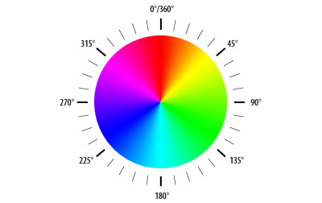

Week 11: Optical Flow
Contents
Week 11: Optical Flow#
Laboratory 8
Last updated August 17, 2022
00. Content #
Mathematics
Taylor series
Vector fields
Polar coordinates
Programming Skills
Vectorization
Embedded Systems
Thonny and MicroPython
0. Required Hardware #
Microcontroller: Raspberry Pi Pico
Breadboard
USB connector
Camera
Write your name and email below:
Name: me
Email: me @purdue.edu
import numpy as np
import matplotlib.pyplot as plt
import cv2
1. Optical Flow and Motion Tracking #
Optical flow is the motion and light patterns observed when an object and camera move relative to each other. The velocity of objects in a video can be estimated using optical flow. This is especially relevant in computer vision tasks when the goal is motion-based object detection or robot navigation.
Let \(f(x,y,t)\) be a continuous grayscale video mapping \(\mathbb{R}^3\) to \(\mathbb{R}\). The variables \(x\) and \(y\) represent pixel coordinates and \(t\) is the frame number. The output is the pixel intensity, a integer between \(0\) and \(255\), at location \((x,y)\) in frame \(t\). When we read in an image in Python we are observing a sampling of points of \(f(x,y,t)\) which we will call \(f_d(n,m,t)\). So, \( f_d(n,m,t) = f(n\Delta i, m \Delta j,t),\) where \(\Delta i\) and \(\Delta j\) are the sampling distances along the x and y-axis, respectively.
Let’s assume there is a object at the location \((x,y,t)\) and after a small \(\Delta t\) step forward in time, the object moves from \((x,y)\) to \((x+\Delta x,y+\Delta y)\) in the video. Using Taylor series to expand \(f(x,y,t)\) and truncating after the first degree terms, we can estimate the velocity of the object.
Assuming the object’s brightness does not change as it moves, \(f(x+\Delta x,y+\Delta y,t+\Delta t)=f(x,y,t)\), so
Divide both sides by \(\Delta t\) to get
Notice that \(\frac{\partial f}{dx}\) and \(\frac{\partial f}{dy}\) are the image gradients we calculated in the lab on edge detection, and \(\frac{\partial f}{dt}\) is the pixel-wise difference between frame \(t+\Delta t\) and frame \(t\). That means in the last equation the velocity components \(\frac{\Delta x}{\Delta t}\) and \(\frac{\Delta y}{\Delta t}\) are unknown and the other 3 terms \(\frac{\partial f}{dx},\frac{\partial f}{dy},\) and \(\frac{\partial f}{dt}\) we can calculate, but we can’t solve for 2 unknowns with only one equation. We’re going to need some more assumptions.
Exercise 1 #
Look up “the aperature problem” as it relates to optical flow. In a few sentences, describe what it is and how it impacts the type of objects we are able to track with optical flow.
Write Answers for Exercise 1 Below
Farneback Optimal Flow#
The assumption that \(f(x+\Delta x,y+\Delta y,t+\Delta t)=f(x,y,t)\) is reasonable for most situations. However, if there is a lot of change from frame to frame, for example a helicopter-mounted camera undergoing strong vibrations, then our results will not be as good. In 2003, Gunnar Farneback proposed a solution to this problem. To fully explain his method, a good knowledge of linear algebra and least squares minimization is necessary, but we will give a general overview.
The idea behind Farneback’s algorithm for calculating optimal flow is:
Starting with the previous frame, reduce the resolution of the image.
Estimate the values of a small patch of pixels with a quadratic polynomial (like how we did polynomial interpolation in 1 dimension but this is in 2 dimensions).
In the next frame, do the same quadratic estimation.
With the 2 simplified quadratic functions, it’s “easy” to calculate the displacement of the patch of pixels (this is where the linear algebra and least squares minimization comes into play).
Increase the resolution of the frame and repeat the process again.
By repeating on higher and higher resolution images, we are able to capture both big and small displacements. After refining how much displacement there is between the two frames, the result is \(\frac{\Delta x}{\Delta t}\) and \(\frac{\Delta y}{\Delta t}\) for each pixel in the image, so we call this type of process dense optimal flow.
Exercise 2 #
Read through the following cell. In a few sentences, describe what the code does.
Write Answers for Exercise 2 Below
answer here
vid = cv2.VideoCapture('test_vid.mov')
height = vid.get(cv2.CAP_PROP_FRAME_HEIGHT)
width = vid.get(cv2.CAP_PROP_FRAME_WIDTH)
scale = 0.25
new_size = (int(width*scale),int(height*scale))
success, frame1 = vid.read()
frame1 = cv2.resize(frame1,dsize=new_size)
previous = cv2.cvtColor(frame1,cv2.COLOR_BGR2GRAY)
while True:
success, frame2 = vid.read()
if not success:
print("Unable to read frame. Exiting ...")
break
next = cv2.cvtColor(frame2,cv2.COLOR_BGR2GRAY)
next = cv2.resize(next,dsize=new_size)
# flow is a numpy 2 dimensional array and
# flow[i,j] = [dx/dt,dy/dt] for pixel (i,j)
flow = cv2.calcOpticalFlowFarneback(previous,next, flow = None,
# don't worry about these parameters for now
pyr_scale = 0.5,
levels = 3,
winsize = 10,
iterations = 3,
poly_n = 5,
poly_sigma = 1.1, flags = 0)
cv2.imshow('next_frame',next)
k = cv2.waitKey(30) & 0xff
if k == ord('q'): # press Q on keyboard to stop
break
previous = next
vid.release()
cv2.destroyAllWindows()
At each step flow defines a vector field. At pixel location \([i,j]\), we define a vector \(\langle dx/dt, dy/dt\rangle\). This vector has a magnitude and a direction.
Exercise 3 #
What are the formulas to calculate the magnitude and direction of a vector \(\langle x,y \rangle\)?
Why would computing the magnitude and direction of \(\langle x,y \rangle\) be the same as converting the Cartesian ordered pair \((x,y)\) to polar coordinates?
Write Answers for Exercise 3 Below
Exercise 4 #
Pick two frames to calculate flow. Use the matplotlib function quiver to plot the vector field using arrows.
Write Answers for Exercise 4 Below
# example for a plotting a constant vector field where each vector is <1,1>
x,y = np.meshgrid(np.linspace(start=0, stop=10, num=10, endpoint=False),
np.linspace(start=0, stop=10, num=10 , endpoint=False))
dxdt = 1
dydt = 1
plt.quiver(x,y,dxdt,dydt,color='b', units='xy', scale=1)
plt.show()
Another way to visualize the vector field is using color to represent angles and the brightness of the color to represent the magnitude. The HSV or (Hue Saturation Value) color space is the perfect candidate. We are going to relate Hue to the angle of the vector. The image below shows each hue at full saturation for different angles.
{kind=link}

Exercise 5 #
Fill in the code below to compute the magnitude and direction of the velocity vectors at each pixel location. Now we can visualize how the vector field changes from frame to frame and in what direction the objects in the frame are moving.
Write Answers for Exercise 5 Below
cap = cv2.VideoCapture('test_vid.mov')
height = cap.get(cv2.CAP_PROP_FRAME_HEIGHT)
width = cap.get(cv2.CAP_PROP_FRAME_WIDTH)
scale = 0.25
ret, frame1 = cap.read()
frame1 = cv2.resize(frame1,dsize=(int(width*scale),int(height*scale)))
previous = cv2.cvtColor(frame1,cv2.COLOR_BGR2GRAY)
hsv = np.zeros_like(frame1)
hsv[...,1] = 255 # always at full saturation
while True:
ret, frame2 = cap.read()
if not ret:
print("Unable to read frame. Exiting ...")
break
next = cv2.cvtColor(frame2,cv2.COLOR_BGR2GRAY)
next = cv2.resize(next,dsize=(int(width*scale),int(height*scale)))
flow = cv2.calcOpticalFlowFarneback(previous,next, flow = None,
pyr_scale = 0.5,
levels = 3,
winsize = 10,
iterations = 3,
poly_n = 5,
poly_sigma = 1.1, flags = 0)
# compute magnitute and angle for each vector in flow
# mag and ang should have the same dimensions as the variable next
mag = # fill in
ang = # fill in
# ang needs to be between 0 and 2pi
hsv[...,0] = ang*180/np.pi / 2 # convert radians to degrees then divide by 2
hsv[...,2] = cv2.normalize(mag,None,0,255,cv2.NORM_MINMAX)
rgb = cv2.cvtColor(hsv,cv2.COLOR_HSV2BGR)
cv2.imshow('frame2',rgb)
k = cv2.waitKey(30) & 0xff
if k == ord('q'): # press Q on keyboard to stop
break
previous = next
cap.release()
cv2.destroyAllWindows()
2. Repeat with Your Own Video #
As you did in the previous lab, you will be repeating some of exercises again with your own recorded video. When recording your video, take into account what is being done in the lab and consider if the video you have will produce good results.
Exercise 6 #
Save a few seconds worth of frames from the video feed. There needs to be at least one moving object. Pick two frames to calculate flow and plot the associated vector field.
Write Answers for Exercise 6 Below
Exercise 7 #
Use the completed code from Exercise 5 to show the optical flow of your own video.
Write Answers for Exercise 7 Below
Reflection #
1. What parts of the lab, if any, do you feel you did well?
2. What are some things you learned today?
3. Are there any topics that could use more clarification?
4. Do you have any suggestions on parts of the lab to improve?